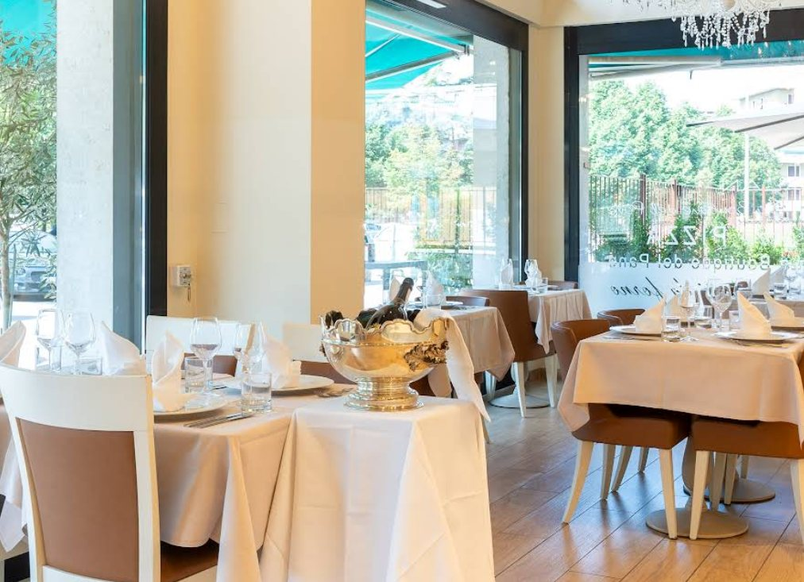
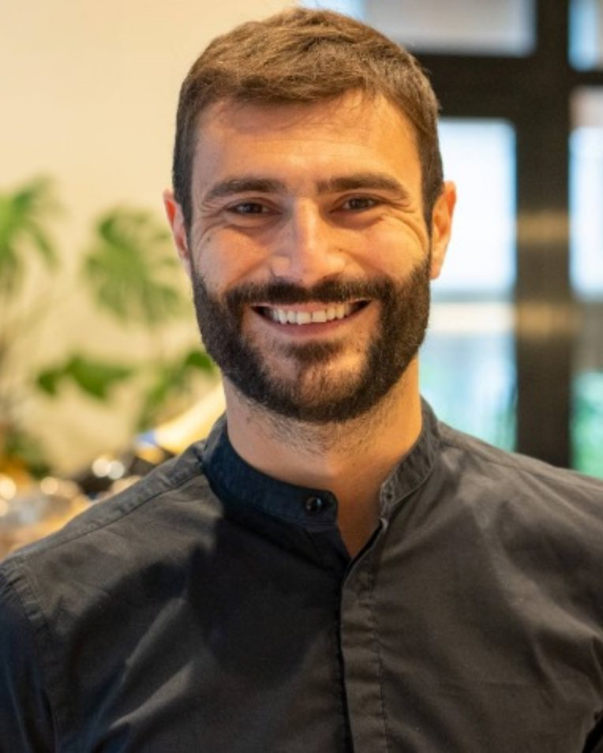
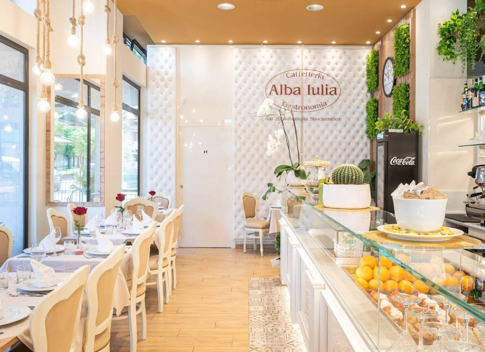
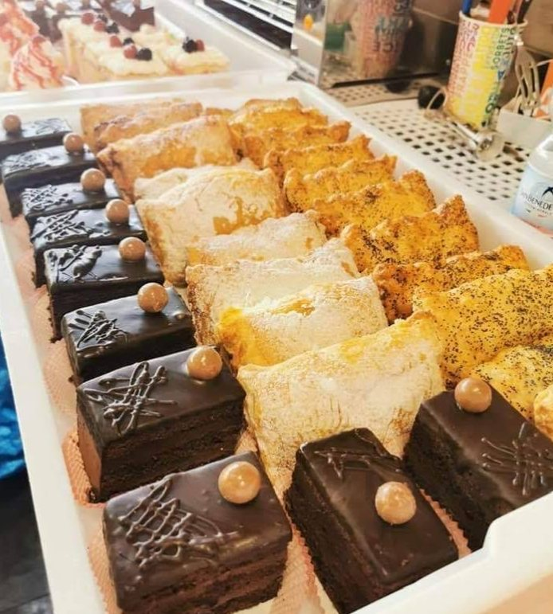
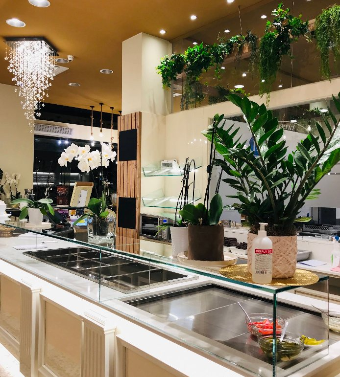
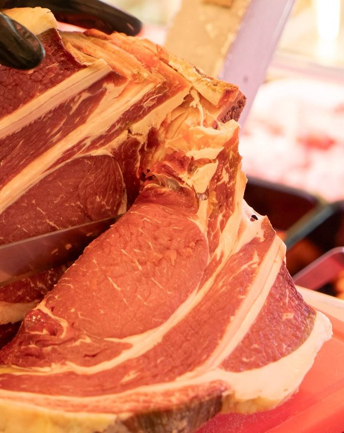
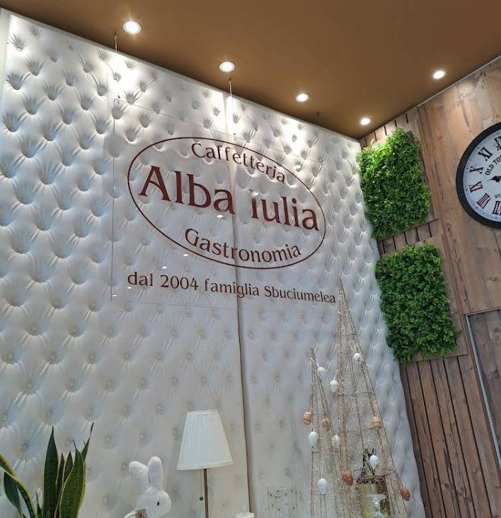
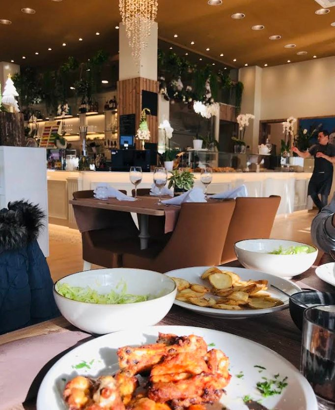
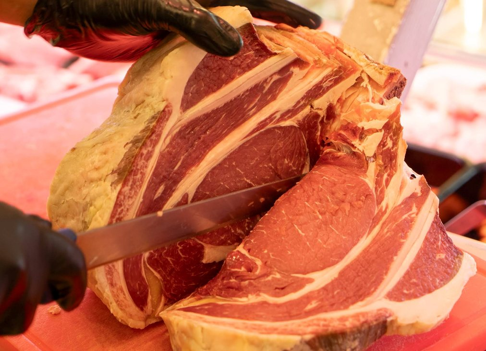

Ristorante
Un menu che viaggia tra le regioni romene e quelle italiane. Primi, secondi e contorni di nostra produzione, anche nel dehors.
Caffetteria · Ristorante · Gastronomia · Macelleria
Dal 2004 la famiglia Sbuciumelea accoglie Verona in Via Luigi Prina. Sarmale, mici e ciorbe della tradizione romena accanto alla cucina italiana. E poi carne fresca dal nostro banco, pasticceria e prodotti tipici, dalla colazione alla cena.


Un solo indirizzo
Un caffè con la brioche la mattina, il pranzo in sala, e prima di tornare a casa la carne per domani. Da Alba Iulia si passa a ogni ora.

Un menu che viaggia tra le regioni romene e quelle italiane. Primi, secondi e contorni di nostra produzione, anche nel dehors.

Colazione, pasticceria fresca e aperitivo. Dalle 9 del mattino, sette giorni su sette.

I nostri piatti pronti da portare via e un piccolo market di prodotti tipici romeni, moldavi e italiani.

Carne fresca selezionata e salumi artigianali, tagliati al momento come li chiedi tu.

Dal 2004 · famiglia Sbuciumelea
Nel 2004 Alba Iulia è stato il primo locale di Verona dedicato alla gastronomia tipica romena, e il secondo in tutta Italia. Porta il nome della città simbolo della nostra terra, e l'abbiamo costruito come si costruisce una casa: un pezzo alla volta, con le nostre mani.
Oggi in sala e al banco c'è ancora la famiglia. Il titolare sceglie la carne, segue la cucina e accoglie i clienti di persona. Nel 2022 abbiamo inaugurato i nuovi spazi di caffetteria e gastronomia, con lo stesso spirito del primo giorno.
Chi entra da noi è un ospite. Il resto lo fa la cucina.
Specialità della casa
Ricette romene tramandate in famiglia, preparate ogni giorno nella nostra cucina. Chiedi in sala il piatto del giorno.

Il banco
La stessa carne che cuciniamo in sala, pronta per la tua cucina. Tagli freschi, macinato per i mici, salsicce e salumi artigianali. E poi tutto quello che serve per una tavola romena o moldava: formaggi, conserve, dolci e bevande.

Chi viene, ritorna
Cucina di famiglia, porzioni generose e un'accoglienza che fa tornare. Per tanti romeni a Verona è il sapore di casa. Per tanti veronesi è la scoperta di una cucina nuova.
Galleria
Vieni a trovarci
| Lunedì – Domenica | 09:00 – 20:00 |
|---|